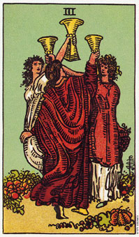

圣杯意味庆贺或重聚。
圣杯三意指欢乐、分享或庆贺。这张牌通经常会出现在圣诞节之前的几个星期中，因为大多数人即将举行祝贺。这张牌上所画的三个女人正在庆祝丰收，他们辛勤的成果就展示在他们的脚边。这是一张意味通过障碍的胜利，或者工作产生成果的牌。
圣杯三通常指一次出现了若干个机会，有时也指一种不是“充满机会就是完全缺乏机会”的状态。换句话说，当你得到一次机会时，一定还会有其他的选择机会。
牌面上所画的三个女人，被周遭成熟的果实包围着，而其中甚至有一人的左手拿着一串葡萄。这意味着努力已产生成果，或工作已经得到了报偿。开牌若出现这张圣杯三，即表示报偿或经验的分享。正立的圣杯三亦可亦指团体、聚会和开会。
大体的意义
圣杯三是一张代表庆祝、团圆或当所有参与者带来欢乐的一场聚会。这杖牌可一暗示由三人或更多的人来分享成功。我的一位顾客最近来问我，在近期的一个方案中，她这一队是否会雀屏中选，结果这张正立的圣杯三证实她将会成功。
在另外的立自重，珍妮斯被解雇了，然后花了十星期的时间找各种不同类型的工作，结果都失败了。接着她的牌局中出现了这张牌，我想她解释说，她会有几个工作机会可以选择，在那之前，它可以放轻松一点。一个月之后她来电说，在一个星期内她得到了三个工作机会，隔一个星期又得到一个。
两性关系上的意义
在两性关系分析当中，圣杯三通常意指快乐及分享，或者一次成功的重聚。它也可说明在一种特殊两性关系中的某个第三者，而这可能是指一个小孩(圣杯二的产物)，或者，如果是指大人的话，它可能在暗示从这几个伴侣当中选择一位。
再说一次，这张牌表示两性关系的可能人选“不是太多就是根本没有”的状态。在某个时期当中，你可能无法找到一个合适的人，但是一旦你找到了，可能将会有两个以上的伴侣可以选择。
倒立的圣杯三
圣杯三的道理象征因没有得到预期的结果二感到不快乐或失望。此时杯子倒转过来，而无法承接在正立时所容纳的爱。这张倒立的牌可意指由与缺乏支持而导致友谊或两性关系的失败。有时候两性关系中的第三者是导致不稳定的因素。
短暂的相距或飞逝的机会也是这张牌的意思。当开牌时出现了宝剑七，则暗示一段桃色事件，或是某位朋友或亲人从中阻挠。
这张牌也可能意味着积极、成功，然而却短暂的状态。假如你能接受它是短暂的，那么你就会觉得快乐;如果你坚持要使这种暂时的状态成为永久，那么失望当然就会跟着来了。
许多年前，有位朋友在代表现在的位置上翻到了圣杯王牌，而圣杯三则出现在代表问题周遭的能量的位置上，圣杯骑士出现在代表她两性关系问题的答案的位置上。我向她解释道，在四个礼拜之内，将会有一位既温柔有又创造力的男性走进她的生命之中，对方有着蓝色或浅褐色的眼珠，以及金棕色的头发。这张牌所显示的是说，虽然这是一次心灵及情感成长的大好机会(因接着她又选到了一张圣杯二，位于王牌旁边，出现在代表现在的位置)，然而这两性关系将是短暂的。
“无所谓，我不介意这是不是短暂的。”她说，不过我倒觉得她有些言不由衷。
四十八小时之后，我所描述的那名男子果真进入了她的生活。而且他们几乎可说是立刻就爱上了彼此。六个星期之后，他离开她继续他的环球旅行，因为他是一名四海为家的演艺人员。她既悲痛且憔悴的回来找我。
“为什么他非走不可呢?”她连续不断的问我。
我再一次解释道，那是一次相当成功的两性关系，也是让自己成长的绝佳机会，因为她爱过，笑过，而且在那几个礼拜内扎扎实实的享受人生。接着我又强调她目前这种进退两难的处境，是在是因为她无法接受这份关系的本质原就是暂时的。
在工作环境当中，这张牌倒立可能暗示这些人并灭犹如一个团队般的一起工作，而是互相竞争。这当中看不到牌正立时所显示出来的喜悦，因为每个人多多少少都在放着别人分享或侵入他的工作领域。